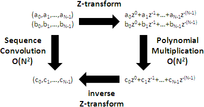
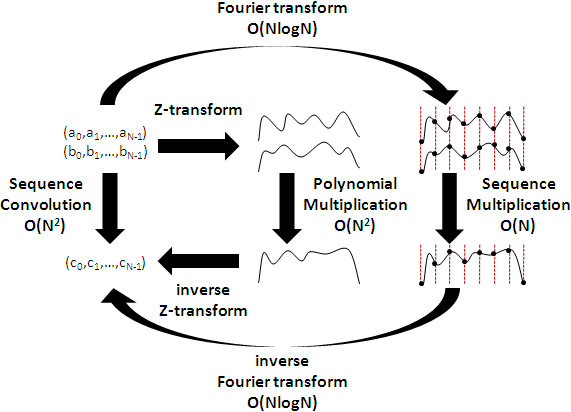
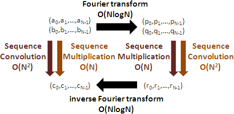

Multiplication
兩串數列做乘法運算，得到一個數列：對應項相乘。
a0 a1 aN-1
(a0,a1,...,aN-1) × (b0,b1,...,bN-1) = ( × , × ,..., × )
b0 b1 bN-1
a-1 a0 a1
(...,a-1,a0,a1,...) × (...,b-1,b0,b1,...) = (..., × , × , × ,...)
b-1 b0 b1
Dot Product
兩串數列做內積運算，得到一個值：對應項相乘後再求和。
橫著寫叫數列，直著寫叫向量。數列內積就是向量內積。
a0 a1 aN-1
(a0,a1,...,aN-1) dot (b0,b1,...,bN-1) = × + × + ... + ×
b0 b1 bN-1
a-1 a0 a1
(...,a-1,a0,a1,...) dot (...,b-1,b0,b1,...) = ... + × + × + × + ...
b-1 b0 b1
內積是線性變換！有限長數列的內積，對應的矩陣，是橫的一條；無限長數列的內積，對應的矩陣，是無限大的矩陣。
[a0 ]
[a1 ] a0 a1 aN-1
[b0 b1 b2 ⋯ bN-1] * [a2 ] = × + × + ... + ×
[⋮ ] b0 b1 bN-1
[aN-1]
[⋮ ]
[a-1] a-1 a0 a1
[⋯ b-1 b0 b1 ⋯] * [a0 ] = ... + × + × + × + ...
[a1 ] b-1 b0 b1
[⋮ ]
Cross Product
外積，本篇用不到，略過。
Convolution
兩串數列做摺積運算，得到一串數列：一次內積算得一項，第一個數列保持不變，第二個數列頭尾顛倒，並且由第0項到第N-1項輪流作為首項。
有限長數列的摺積，第二個數列會頭尾循環，因而也有人特別稱做循環摺積（circular convolution）。
(a0,a1,...,aN-1) convolution (b0,b1,...,bN-1) = (c0,c1,...,cN-1)
c0 = (a0,a1,a2,...,aN-1) dot (b0 ,bN-1,bN-2,...,b1)
c1 = (a0,a1,a2,...,aN-1) dot (b1 ,b0 ,bN-1,...,b2)
c2 = (a0,a1,a2,...,aN-1) dot (b2 ,b1 ,b0 ,...,b3)
⋮
cN-1 = (a0,a1,a2,...,aN-1) dot (bN-1,bN-2,bN-3,...,b0)
(...,a-1,a0,a1,...) convolution (...,b-1,b0,b1,...) = (...,c-1,c0,c1,...)
⋮
c-1 = (...,a-1,a0,a1,...) dot (...,b0 ,b-1,b-2,...)
c0 = (...,a-1,a0,a1,...) dot (...,b1 ,b0 ,b-1,...)
c1 = (...,a-1,a0,a1,...) dot (...,b2 ,b1 ,b0 ,...)
⋮
摺積是線性變換！有限長數列的（循環）摺積，對應的矩陣，正好是循環的Toeplitz Matrix；無限長數列的摺積，對應的矩陣，是無限大的矩陣。
(a0,a1,...,aN-1) convolution (b0,b1,...,bN-1) = (c0,c1,...,cN-1)
[b0 b-1 b-2 ⋯ bN-1] [a0 ] [c0 ]
[b1 b0 b-1 ⋯ bN-2] [a1 ] [c1 ]
[b2 b1 b0 ⋯ bN-3] * [a2 ] = [c2 ]
[⋮ ⋮ ⋮ ⋮ ] [⋮ ] [⋮ ]
[bN-1 bN-2 bN-3 ⋯ b0 ] [aN-1] [cN-1]
(...,a-1,a0,a1,...) convolution (...,b-1,b0,b1,...) = (...,c-1,c0,c1,...)
[ ⋮ ⋮ ⋮ ] [⋮ ] [⋮ ]
[⋯ b0 b-1 b-2 ⋯] [a-1] [c-1]
[⋯ b1 b0 b-1 ⋯] * [a0 ] = [c0 ]
[⋯ b2 b1 b0 ⋯] [a1 ] [c1 ]
[ ⋮ ⋮ ⋮ ] [⋮ ] [⋮ ]
摺積運算的單位元素是脈衝函數。摺積運算擁有交換律、結合律、加法分配律、線性。Linear Time-Invariant System皆可寫成摺積。不懂沒關係，本篇用不到。
Z-transform
一串數列做Z-transform，得到一個複數多項式：數列每一項乘上複數z的次方，次方值是負的索引值，最後全部加起來。可以看作是一串數列與一串複數數列進行內積。
z是一個複數，可以代入數值；不過一般都是維持原本外貌，以代數z示人。
Z-transform of (a0,a1,...,aN-1) = a0z0 + a1z-1 + ... + aN-1z-(N-1)
Z-transform of (...,a-1,a0,a1,...) = ... + a-1z1 + a0z0 + a1z-1 + ...
數列摺積與多項式乘法（普通的演算法）
因為電腦無法處理無限長數列，所以此處只討論有限長數列。
兩串數列做Z-transform，變成多項式，然後相乘一下。因為是有限長數列，我們特意讓次方循環。
a0 * z0 + a1 * z-1 + a2 * z-2
×) b0 * z0 + b1 * z-1 + b2 * z-2
——————————————————————————————————————————————————————————————————
a0b2 * z-2 + a1b2 * z-3 + a2b2 * z-4
a0b1 * z-1 + a1b1 * z-2 + a2b1 * z-3
a0b0 * z0 + a1b0 * z-1 + a2b0 * z-2
——————————————————————————————————————————————————————————————————
a1b2 * z0 + a2b2 * z-1 + a0b2 * z-2
a2b1 * z0 + a0b1 * z-1 + a1b1 * z-2
a0b0 * z0 + a1b0 * z-1 + a2b0 * z-2
——————————————————————————————————————————————————————————————————
(a0,a1,a2) (a0,a1,a2) (a0,a1,a2)
dot * z0 + dot * z-1 + dot * z-2
(b0,b2,b1) (b1,b0,b2) (b2,b1,b0)
把相乘結果做逆向Z-transform，竟是原本兩串數列的摺積！
數列摺積就是多項式乘法、多項式乘法就是數列摺積，藉由Z-transform改變計算順序罷了（遮住z不看，就很明顯了）。
數列摺積與多項式乘法的時間複雜度都是O(N^2)。

【註：計算學家重視計算，數列摺積與多項式乘法是主角，Z-transform只是輔助；數學家重視性質，Z-transform才是主角，數列摺積與多項式乘法只是應用。坊間書籍行文風格傾向數學家；書讀不通的時候，不妨揣摩一下數學家的觀點吧。】
數列摺積與多項式乘法（Fourier Transform）
傅立葉轉換其實就是一串數列進行Z-transform，變成複數多項式，z分別代入ei*2π*(0/N)、ei*2π*(1/N)、……、ei*2π*((N-1)/N)，求得N個實際數值。
兩個多項式相乘，可以簡化成這2N個數值點對點相乘！
正向與逆向傅立葉轉換需時O(NlogN)，N個數值兩兩對應相乘需時O(N)，總時間複雜度為O(NlogN)。

證明過程猜測如下：線性變換的本質，是在eigenvector上面進行倍率縮放，摺積也不例外。傅立葉轉換的矩陣，恰好是orthogonal eigenbasis，所以每個維度就可以各自縮放了。
數論轉換也有著相同的性質，哈特利轉換則有著類似的性質。
UVa 12298 ICPC 4671 5705
數列摺積與多項式乘法──循環的Toeplitz Matrix的乘法
循環的Toeplitz Matrix乘以向量，就是循環摺積。得運用傅立葉轉換、數論轉換。
一般的Toeplitz Matrix乘以向量，只要填充一下元素，也能變成循環的Toeplitz Matrix乘以向量。
數列摺積與多項式乘法──大數乘法
大數乘法是直式乘法，效果同多項式乘法、同數列摺積。得運用傅立葉轉換、數論轉換。
大數乘法的演算法有Schönhage-Strassen Algorithm與Fürer's Algorithm，事實上只是套用不同的數論轉換演算法而已。
注意到，此處談論的多項式乘法，次方是循環的；然而大數乘法，位數並不會循環。解決方式是：被乘數陣列與乘數陣列，預先增加長度，務必大於等於乘積陣列，如此就不受循環影響。
時域摺積等於頻域乘法，頻域摺積等於時域乘法。
傅立葉轉換的輸入稱做「時域」、輸出稱作「頻域」，呼應傅立葉轉換的功能──把波（時間軸）表示成頻譜（頻率軸）。
前面段落所講的是時域摺積等於頻域乘法，事實上頻域摺積也等於時域乘法。
